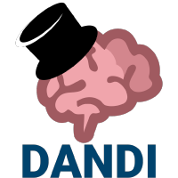

NWB Workshops and Hackathons


Welcome to the DANDI+NWB Tutorial at COSYNE 2023!
The Neurodata Without Borders (NWB) team is holding a tutorial on the DANDI Archive and NWB data standard and on using PyNWB and MatNWB at the COSYNE 2023 tutorial session.
The DANDI Archive now has 100+ publicly available neurophysiology datasets stored using the NWB data standard.
The NWB project is an effort to standardize the description and storage of neurophysiology data and metadata. NWB enables data sharing and reuse and reduces the energy-barrier to applying data analytics both within and across labs. NWB is more than just a file format but it defines an ecosystem of tools, methods, and standards for storing, sharing, and analyzing complex neurophysiology data.
At this tutorial, we’ll teach you how to:
-
find relevant data on the DANDI Archive and use the DANDI compute resources
-
stream NWB data from DANDI and read an NWB file in Python and MATLAB
-
process NWB data using popular tools such as SpikeInterface and suite2p
-
analyze NWB data using tools such as Pynapple, SSM, or your own scripts
Bring your laptop to work along with the demonstration. To get familiar with NWB and DANDI prior to attending, please refer to this documentation.
Registration
There is NO additional fee to attend. When registering for the main meeting, select the Dandi Archive for Neurophysiology Data and the Neurodata Without Borders Data Standard Tutorial.
Dates and Location
- Date/Time: March 9, 2023, 8-10am
- Location: Av. Viger, Convention Floor, Fairmont The Queen Elizabeth
Tutorial Program
8:00 - 8:30: Introduction to the NWB data standard and DANDI Archive
8:30 - 8:55: How to find relevant data on the DANDI archive and use the DANDI Hub
8:55 - 9:00: Break
9:00 - 9:20: How to read and explore an NWB file in Python and MATLAB
9:20 - 9:50: How to analyze NWB data using popular data processing and visualization tools
-
using SpikeInterface to sort raw extracellular electrophysiology recording data streamed from DANDI & write the output back to NWB
-
storing DeepLabCut and SLEAP pose estimation data in NWB
-
using calcium imaging analysis tools, such as CaImAn and suite2p to process and segment raw imaging data and write the output to NWB
Survey
If you attended the tutorial, please fill out this 2-minute survey to give us feedback on what your data needs are and how did this tutorial go for you. Thank you.
Organizing Committee
- Ryan Ly, LBNL
- Cody Baker, CatalystNeuro
- Stephanie Albin, Kavli Foundation
Additional Organizational Support
- The Kavli Foundation